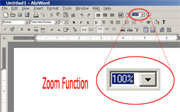

Inserting a HyperText link
The zoom control is a tool that allows the user to position the screen to a more comfortable or
customized state. By choosizing a large percentage size, you can zoom in towards the work area. If a smaller size is choosen, the work area becomes incresingly "farther away," allowing more to be seen on the screen at once, but in less detail.

In the event that you wish to use insert a text hyperlink, perform the following actions.
- Select a place inside your typed text. Select menu "Insert," then select "bookmark." The text you have highlighted is now a "jump-to" spot called a bookmark.
- Next, select another string of text that will contain your "jump-link." Once highlighted, choose menu "Insert", then choose "hyperlink." Select you previously entered bookmark, and press "OK."
- You have now created a hyperlink and its associated bookmark. When this link is double-clicked, AbiWord will automatically jump to the bookmark that is linked to the hyperlink.